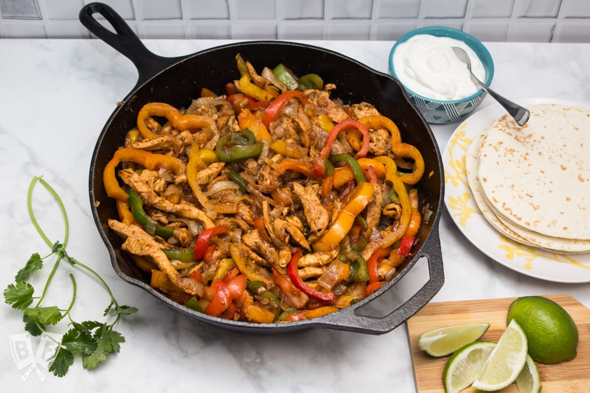

Home
Fajitas!

The Best Version of a Taco! (according to me 😋)
I'll admit I don't know the differences bewteen tacos, burittos, quesadillas, enchiladas, and fajitas;
they all taste amazing to me! However, since I only learned how to make fajitas, that's what I'll stick with for now!
Ingredients
- 2-3lbs Chicken/Shrimp/Beef/Fish/Tofu
- Green Onions (optional)
- 2 Large Red,Orange,or Yellow Peppers
- 1 Medium Red Onion
- 1-2 Garlic Cloves (optional)
- Tomato (optional)
- Fajita/Taco Seasoning
- Oil/Butter of Choice
- Sour Cream (optional)
- 1-2 Avacados (optional)
- Tortillas
- Lime/Lime Juice (optional)
Steps
- Cut Meat of choice into thin strips
- Chop the Green Onions (if used)
- Dice Tomato
- Open and mash avacados, mix 1/2 of available tomato, 1/4 of onion, 1/4 of garlic
- Dice Onion
- Cut Peppers into thin strips
- Mince garlic clove (if used)
- Spread butter/oil in pan; heat to medium
- Place meat into pan; cook lightly before adding other ingredients
- Add Peppers, Onion, Garlic, tomato(optional), and Seasoning
- Add a few squirts of Lime Juice
- Mix together for few minutes
- Remove from pain, strain excess liquid
- Place desired amount into tortilla
- Add chosen toppings (green onions, avacados, sour cream)